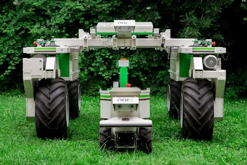

Ideas para proyectos
Robots en la agricultura
Robots para quitar malas hierbas

Más información
Creación de un invernadero
Video: https://youtu.be/UqpncC5A7cw
- Partes del proyecto
- Pantalla para ver los datos de los sensores
- Colocación de sensores
- Sensor de temperatura y humedad
- Sensor de luz
- Higrómetro (sensor de humedad del suelo)
Dato interesante: existen sensores crepusculares que pueden activar o desactivar un sistema dependiendo de la luz.
- Diseño de la estructura del invernadero
- Sistema de riego
NOTA: en algunos videos se usan bombas de agua
Nota: Aunque usar una Orange Pi puede ser un poco complejo, es una excelente opción debido a su capacidad de memoria.